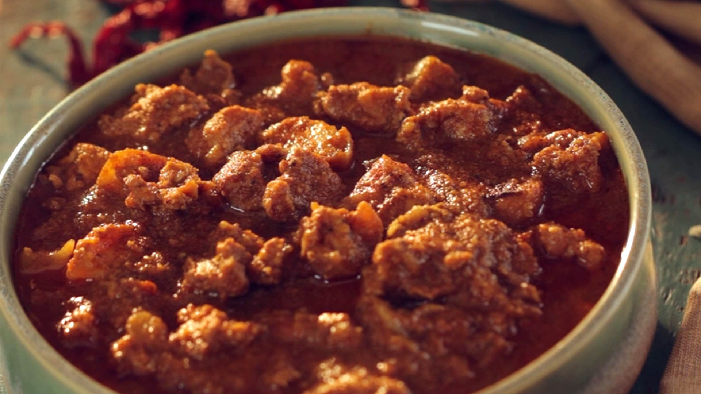

Pork Vindaloo Recipe

Description
Traditional Goan pork vindaloo is flavored with chiles, garlic, and vinegar. It's spicy and tangy at the same time, and it will leave your taste buds tingling for more! Serve with rice or crusty rolls.
Ingredients
- 16 dried Kashmiri chile peppers, stemmed and seeded
- 1 (1 inch) piece cinnamon stick, broken into pieces
- 1 teaspoon cumin seeds
- 6 whole cloves, 1 tablespoon white vinegar
- 2 pounds boneless pork loin roast, trimmed and cut into 1-inch cubes
- ¼ cup vegetable oil, 4 medium onions, chopped
Preparation Steps
- Grind Kashmiri chiles, cinnamon stick, cumin seeds, peppercorns, turmeric, and cloves with a mortar and pestle or electric coffee grinder until smooth. Mix in 1 tablespoon white vinegar to create a smooth paste; season with salt.
- Place pork in a large glass or ceramic bowl. Add spice paste and toss until pork is evenly coated. Cover and marinate in the refrigerator, 8 hours to overnight.
- When ready to cook, heat oil in a Dutch oven over medium-high heat. Add onions, garlic, and ginger; cook and stir until golden brown, about 10 minutes.
- Add pork and all marinade; cook, stirring frequently, until pork has firmed up, about 5 minutes. Pour in boiling water and bring to a simmer. Reduce the heat, then cover and cook until pork is tender, about 40 minutes.
- Stir in vinegar and green chiles; continue to cook, uncovered, until green chiles have softened and vindaloo has thickened, about 30 more minutes. Season with salt as necessary before serving.
Back to Home